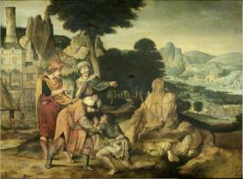
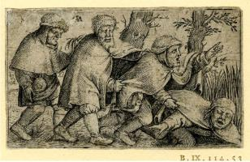

index
/
Українська
Корнелій Массейс
(1510 - 1556)

Повернення блудного сина
1538
Ісусові притчі
Прибуття святого сімейства до Віфлеєму
1543
Сцени з Нового Завіту
Пейзаж зі втечею до Єгипту
1545-50
Втеча до Єгипту
Пейзаж зі святим Ієронімом
1545
Святий Єронім

Чотири сліпці
1550
Ісусові притчі
Розп'яття
Розп'яття
Випробування святого Антонія
Святий Антоній
English
|
Русский
|
Українська